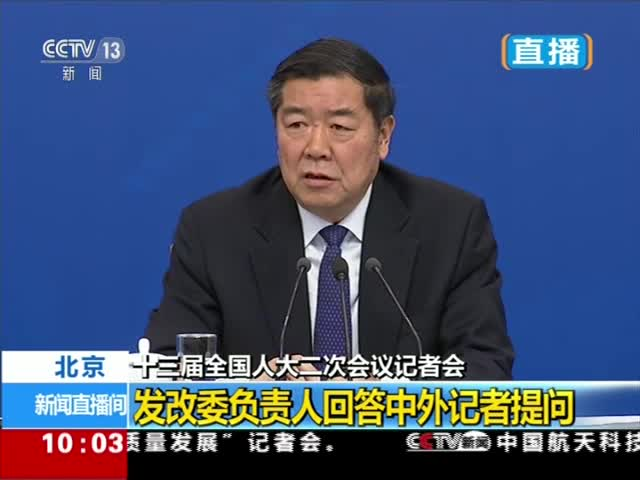
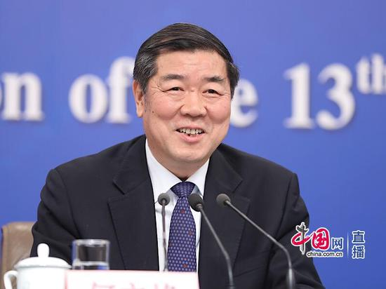

2019年03月06日 10:21 北京青年报
哪些数据只有中国能做到？何立峰给出答案
3月6日上午，十三届全国人大二次会议首场记者会在梅地亚中心举行。国家发展改革委主任何立峰，副主任宁吉喆、连维良受邀出席并回答提问。
何立峰再次重提对中国经济的总结：稳中有进、稳中有变、变中有忧虑，“但是总的趋势还是稳中向好”。
何立峰举出数据称，2018年中国GDP总量达到13万6000亿美元，不论是增长幅度还是增长数量，在世界前五大经济体中都是排第一的。此外，“稳”还表现在去年就业和脱贫人口都超过一千三百万。“这几组数字，只有中国能做到。”
文/北京青年报记者 李岩
摄影/北京青年报记者 魏彤
点击进入专题：
让生活更美好·2019年全国两会新浪特别报道 2019部长发声